Bocetos
Inicio
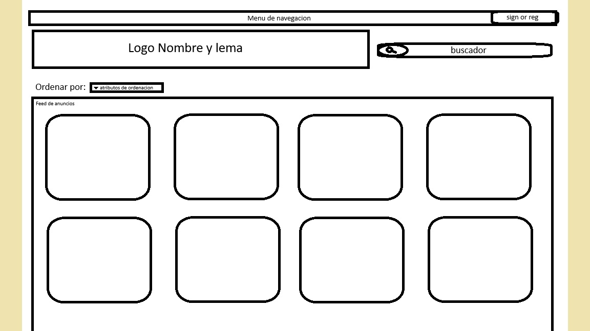Descripcion:
Como se puede apreciar en la imagen sigue el esquema característico de cualquier aplicación de venta de segunda mano.
En la parte superior tenemos un menu de navegacion y en su derecha la opcion de registrarse o iniciar sesion.
Continuando un poco más abajo se puede apreciar el logo de nuestra aplicacion junto con un buscador.
Finalmente y llegando a lo más importante tenemos los productos anunciados junto con su precio y una pequeña Descripcion para entender las especificaciones del producto.
Desplegable
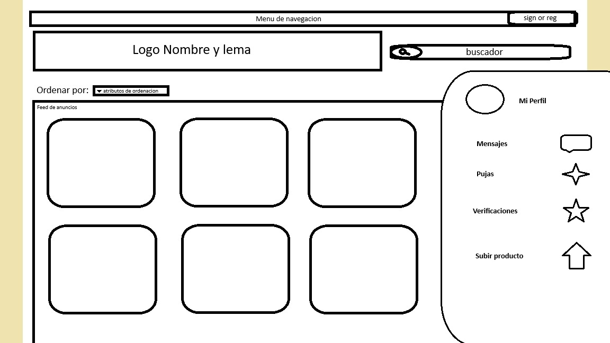Descripcion:
Aqui se puede ver como será el desplegable apra acceder a las distintas opciones de las web
Ventana Producto
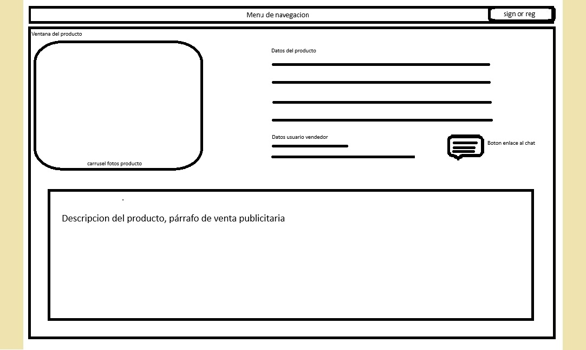Descripcion:
Una vez interesado por un producto, ingresas en el y saldrá este menu.
A la izquierda sucederan una serie de imagenes del producto para ver bien lo que estas comprando.
A la derecha del mismo encontraras los distintos datos del producto, pero sobretodo lo más importante es el boton de chat con el que se podra hablar con el vendedor (indispensable en este tipo de tiendas)
Además al hacer click en la imagen del vendedor podremos acceder a su perfil.
Finalmente abajo saldra una descripcion hecha por el propio comerciante
Ventana de listado de verificaciones
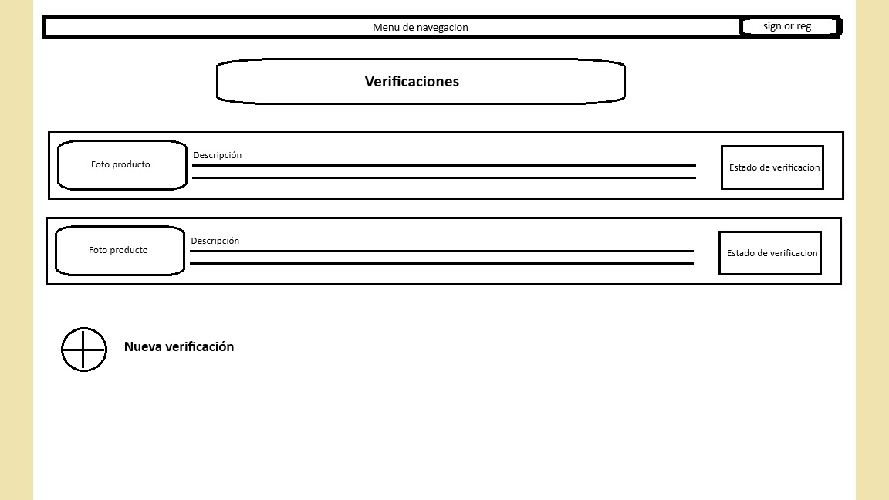Descripcion:
En esta ventana se muestran las verificaciones activas del usuario con información basica como el producto a verificar y el estado de la verificación.
Al hacer click sobre un producto nos llevará a la ventana de verificacion correspondiente.
En la parte inferior izquierda se encuentra un botón para añadir una nueva verificación.
Ventana de verificacion
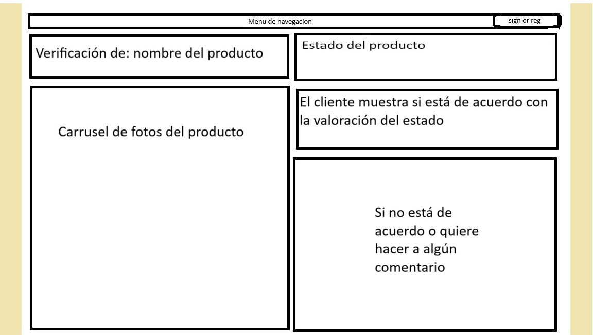Descripcion:
En esta ventana la gente podra ver el estado del producto con nuestra valoracion, es decir, verificado por nosotros
A parte de ver nuestra verificacion con respecto de que el producto existe y si esta o no en buen estado, el cliente podrá añadir algun comentario al respecto o incluso no estar de acuerdo con nuestra valoracion.
Ventana de publicar un producto

Descripcion:
En esta ventana se podra subir un producto a la web.
En la parte superior se podra añadir las fotos del producto.
En la parte inferior se podra añadir el nombre del producto o titulo del anuncio, la descripcion del producto, el precio y la categoria a la que pertenece.
Por ultimo encontramos un botón para publicar el anuncio en la web.
Ventana de productos de un perfil
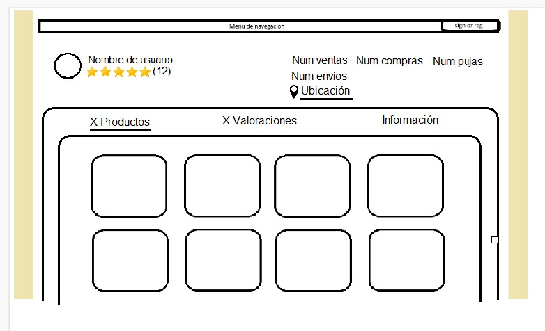Descripcion:
En esta ventana se puede ver como queda estructurado la pagina del perfil de un usuario.
En esta imagen se muestra la feed con los productos subidos por un usuario.
En la parte superior se puede ver la foto de perfil del usuario y su nombre.
En la parte superiro derecha se muestra información sobre la actividad del usuario además de su ubicacion aproximada.
Ventana de valoraciones de un perfil
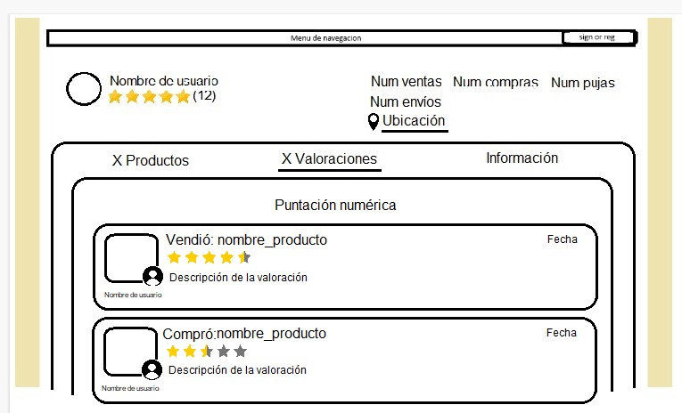Descripcion:
En esta ventana del perfil se muestran las valoraciones recibidas por el usuario y así comprobar las interacciones previas de este usuario.
Ventana de información de un perfil
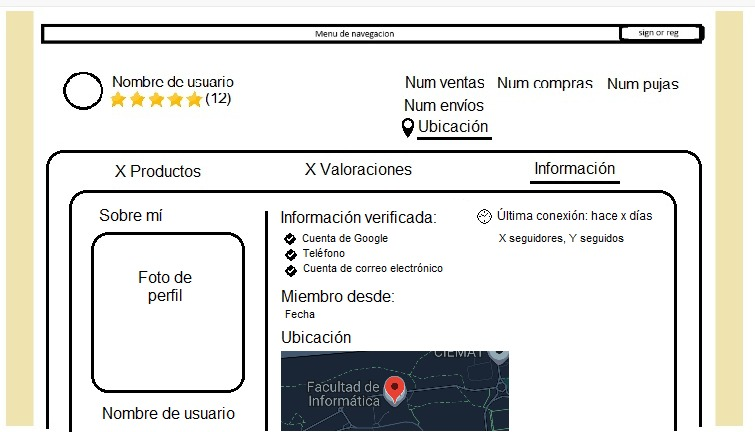Descripcion:
En esta ventana se muestra la información del usuario, como su nombre, foto de perfil, ubicación, actividad, fecha de registro en la web, información de contacto y su ultima conexión.
Ventana de listado de chats
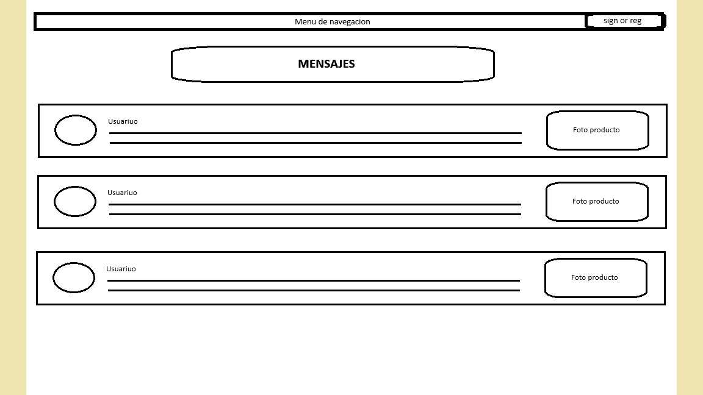Descripcion:
En esta ventana se muestran los chats activos del usuario con información basica del chat como el producto por el que se está negociando y el usuario con quien se chatea.
Al hacer click sobre un chat nos llevará a la ventana con el chat correspondiente.
Ventana de chat
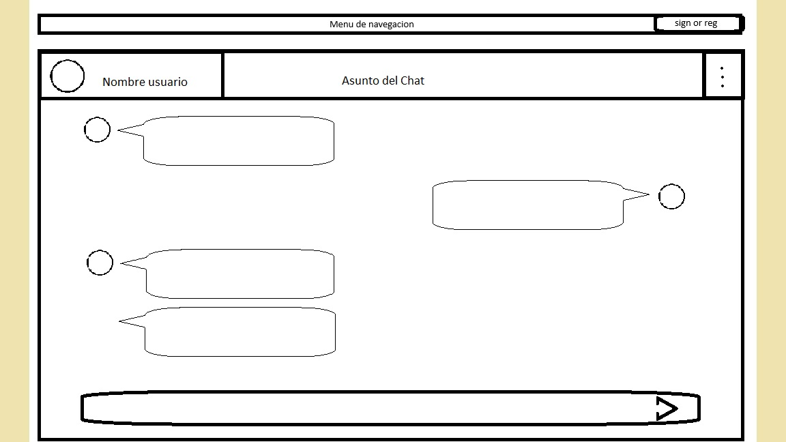Descripcion:
Aqui podemos ver la interfaz de una ventan de chat entre dos usuarios.
Ventana de listado de pujas
Descripcion:
En esta ventana se muestran las pujas activas del usuario con información basica de las pujas como el producto por el que se está pujando, la ultima puja y el tiempo restante.
Al hacer click sobre una puja nos llevará a la ventana de puja correspondiente.
Ventana de puja
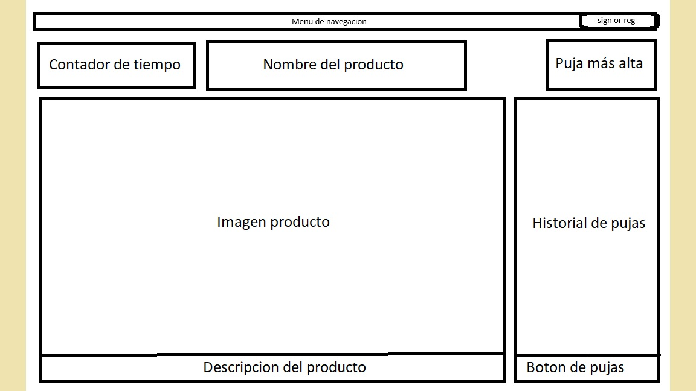Descripcion:
Aqui podemos ver la interfaz de la ventana de una puja en la que se muestra toda la información relevante de la misma.